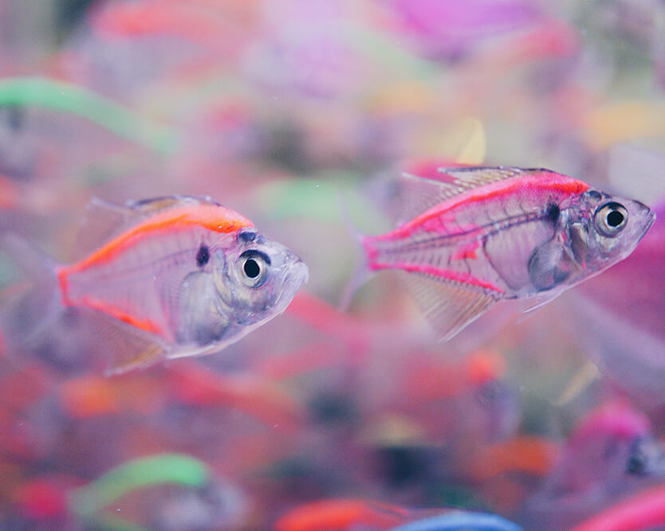

Cam balığı (Parambassis ranga), Güney Asya kökenli tropikal bir türdür ve akvaryum dünyasında “Indian Glassfish” veya “Indian X-ray Fish” olarak da bilinir. Ortalama 5–8 cm uzunluğa ulaşabilen bu balık, tamamen şeffaf vücut yapısıyla dikkat çeker ve bu özelliği sayesinde akvaryum severler arasında popülerdir. Barışçıl bir tür olan cam balıkları sürü halinde yaşamayı tercih eder ve akvaryumda orta seviyelerde yüzerek görsel bir hareketlilik sağlar. 20–26°C sıcaklık aralığında, pH 6.5–7.5 değerlerinde ve iyi filtrelenmiş sularda sağlıklı şekilde gelişirler. Omnivor beslenme yapısına sahip olduklarından canlı yemler, küçük böcek larvaları ve kaliteli kuru yemlerle beslenebilirler. Üreme döneminde yumurtalarını serbest bırakarak çoğalırlar. Hassas yapıları nedeniyle akvaryumda bitkiler ve saklanma alanları bulundurmak önemlidir. Şeffaf görünümleri ve sakin davranışlarıyla cam balığı, akvaryumunuza hem estetik hem de farklı bir deneyim kazandırır.